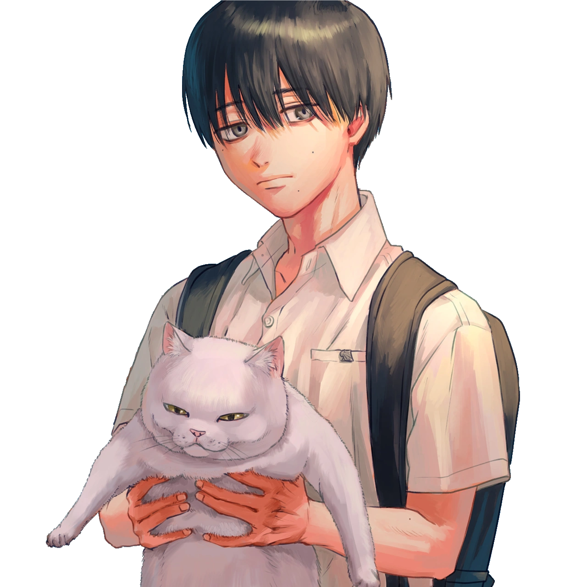
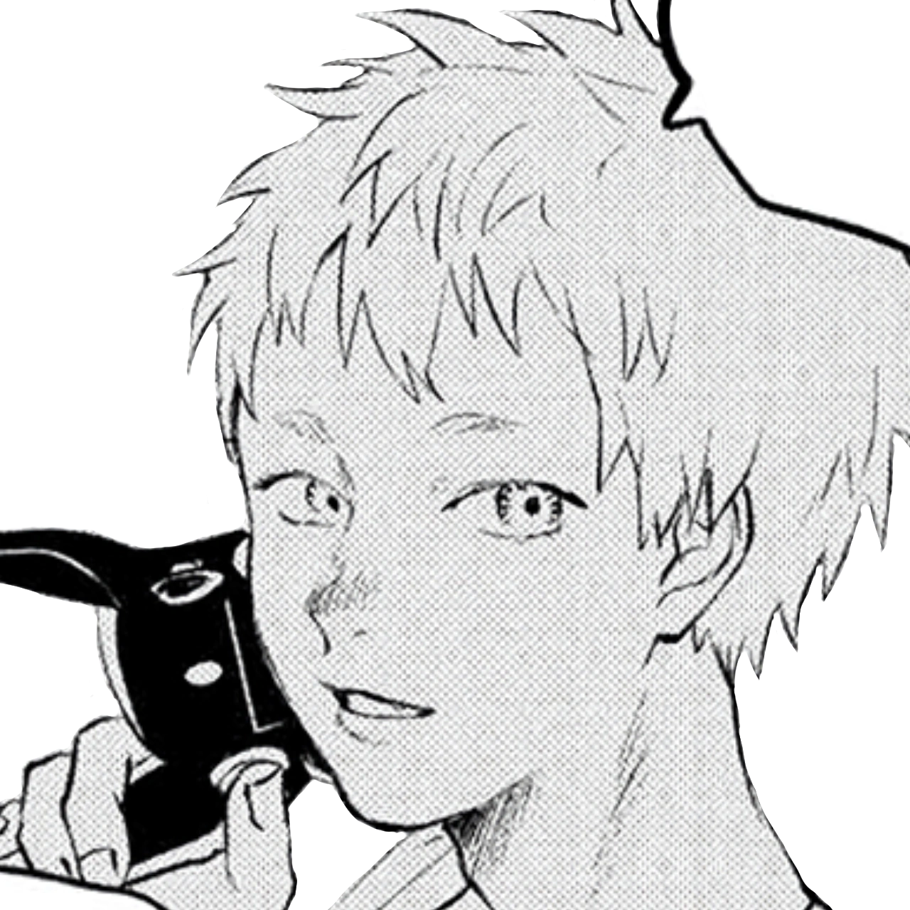
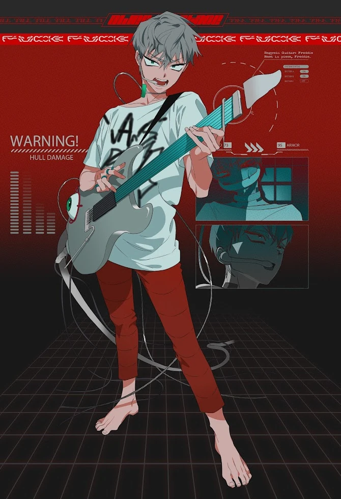
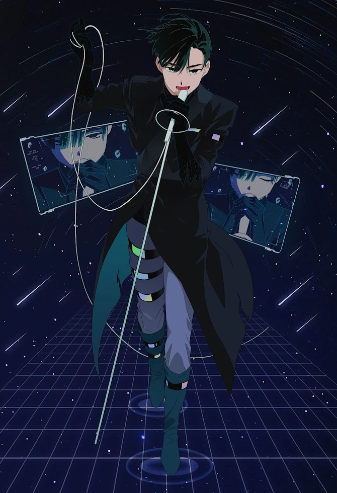
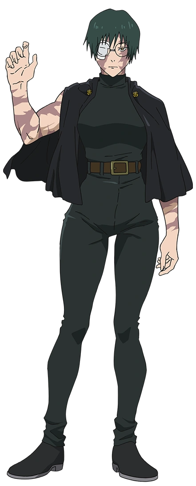
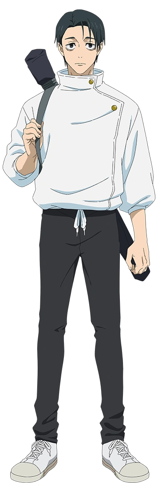
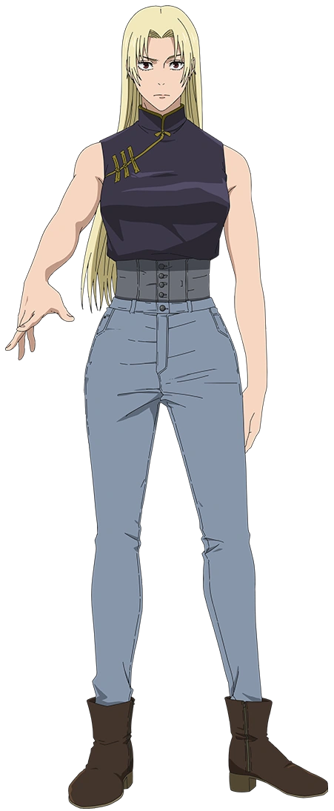
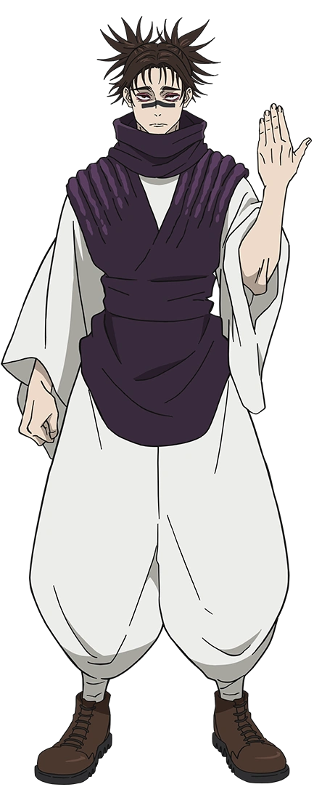

I built you a page once before. This one has a question at the end of it.
scroll
and
the summer hikaru died

her

me
YoshikiandHikaru
Yoshiki looked straight at the thing wearing his best friend's face and did not run. He knew the whole time, and he still said stay. That is him. He saw what I actually am, all of it, and instead of leaving he made room.
I am Hikaru. Or whatever came back wearing him. Learning how to be a person, mostly by watching him do it better.
alien stage

her

me
TillandIvan
Till kept singing. Cage after cage, he kept singing, and he never let anyone tell him what he was allowed to want. He burns. He has never known how to be small for anyone's comfort, and I hope he never learns.
I am Ivan, whose whole tragedy is loving someone quietly and never saying it in time. He thought there would be more room later. So I am saying it now, loudly, where it cannot be taken back.
jujutsu kaisen

her

me
MakiandYuta
They told Maki she was nothing. A whole family built to convince her she was worthless, and she walked out stronger than every person who ever said it. She was not handed anything. She took it.
I am Yuta, which means I love people so hard it once turned into an actual curse. I have always been too much. She is the first person to look at that and call it a good thing.
jujutsu kaisen

her

me
YukiandChoso
Yuki laughs at the end of the world. She is funniest exactly when things are worst, which is a kind of courage most people never manage. She has made a lot of things survivable for me.
I am Choso, who decided one day that a person was his and then never wavered. No conditions. No expiry. I made that decision about her a while ago and I have not moved since.
and
You are green.Not the soft kind. The kind that cracks concrete,the kind that grows back after the fire,the kind nobody gave permission to.·I am red.Loud, a little too much, always the first to bleed,a heart that shows up in every single thing I make,including this.·Green and red sit opposite each other on the wheel,which is a fancy way of sayingwe make each other louder.·She in some rooms, him in others,and mine in all of them.
and
Monika, will you be my girlfriend?
YEAHHH FUCK YEAH WOOOO YEAHHH YAYAYAY WOOOOO
cough
I love you so much, my orchid.
forever & always ♡
orchids for you, white roses for me made with every ounce of nerve I had